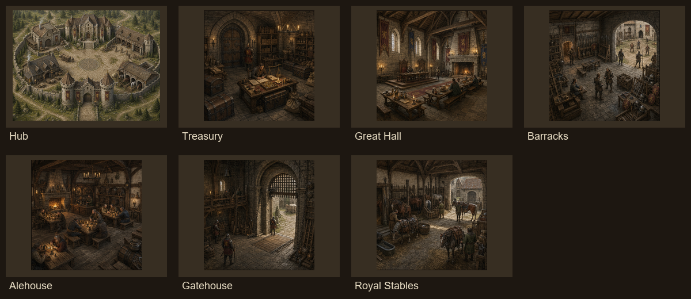
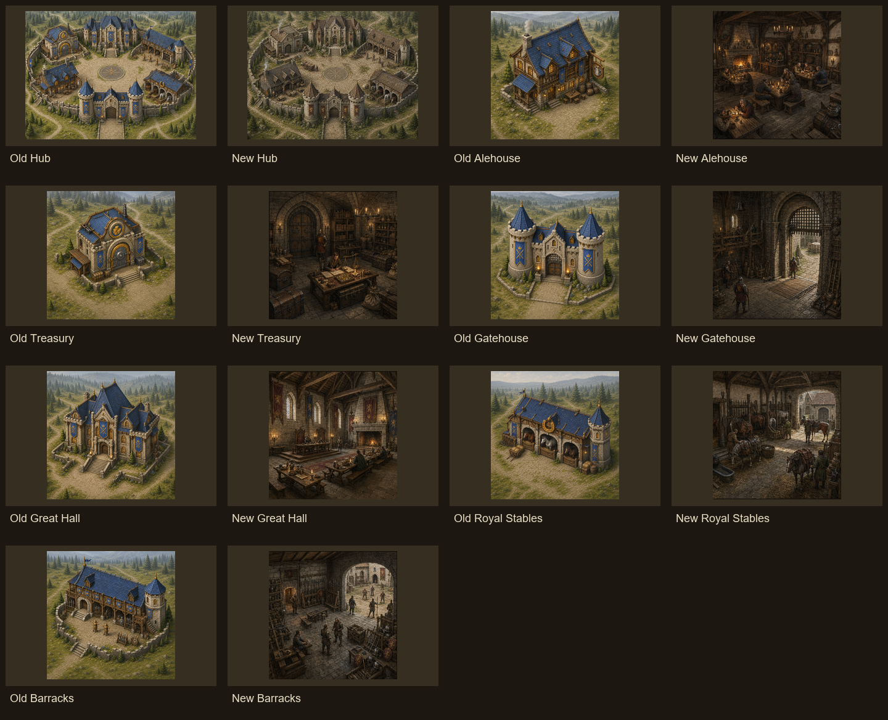
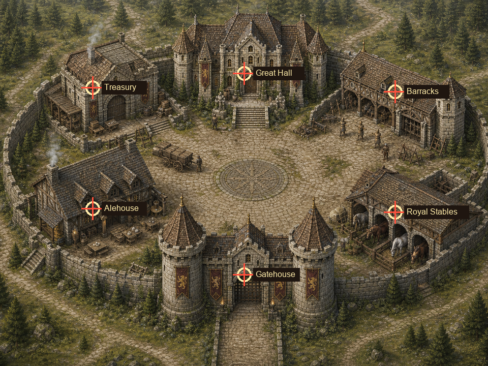
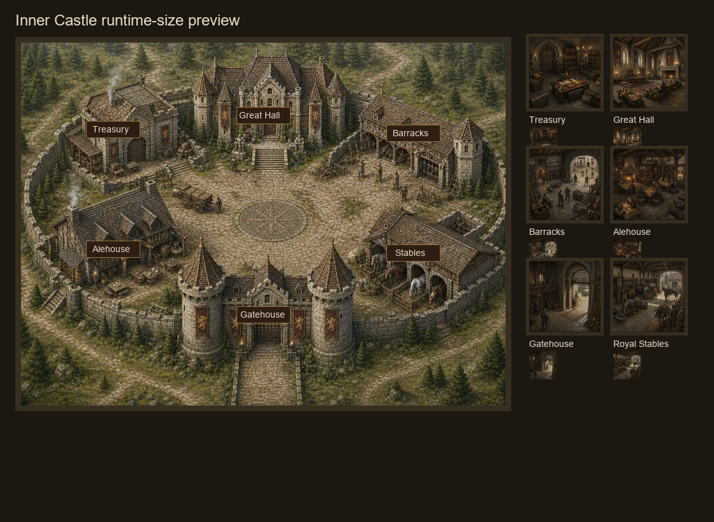

Pass 3D Inner Castle QA
Runtime UI Harness
Stoneford - Inner Castle
Explore the Royal Bailey. Building functions and upgrades will arrive in a future update.

Mobile Landscape Harness
Stoneford - Inner Castle
New Contact Sheet

Old vs New

Hub Hotspot Check

Runtime Size Preview

Source And Runtime Sizes
| Asset | Source | Old source | New source | Optimized | Old optimized | New optimized |
|---|---|---|---|---|---|---|
| Hub | 1448x1086 | 3,230,073 | 3,336,275 | 1280x960 | 362,130 | 395,664 |
| Treasury | 1254x1254 | 2,970,431 | 1,803,582 | 512x512 | 84,368 | 47,994 |
| Great Hall | 1254x1254 | 2,916,524 | 1,943,520 | 512x512 | 83,272 | 56,720 |
| Barracks | 1254x1254 | 2,906,193 | 2,002,019 | 512x512 | 79,760 | 59,942 |
| Alehouse | 1254x1254 | 2,936,024 | 1,809,940 | 512x512 | 82,284 | 50,644 |
| Gatehouse | 1254x1254 | 2,743,217 | 1,970,877 | 512x512 | 74,426 | 57,966 |
| Royal Stables | 1254x1254 | 2,871,966 | 1,973,638 | 512x512 | 72,820 | 58,194 |